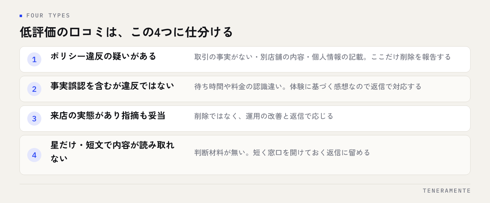

低評価の口コミへの対応で最初に決めるべきなのは、文面ではなくその口コミが削除申請の対象になるかどうかです。ここを分けずに動くと、消えない口コミの削除を待ち続けたり、逆に返信すべきものを放置したりします。この記事では、低評価の口コミを4つに仕分ける判断基準と、削除を報告する手順を順に整理します。
📌 この記事の結論
低評価の口コミは、内容がGoogleのポリシーに違反しているかどうかで対応が変わります。削除申請が通るのはポリシー違反だけで、「事実と違う」「不当だと感じる」は理由になりません。大半は返信で対応する前提に立つほうが、結果的に早く片付きます。
01低評価が付いたとき、最初にやるのは削除申請ではない
星1つの通知が届いた直後は、消したいという判断に傾きます。ですが、削除の報告をしてから結果が返るまでの間、店舗側でできることはありません。待っている時間だけが進み、口コミは表示され続けます。
先にやるのは、口コミの内容を読んで仕分けることです。Googleが削除の対象にしているのは、ポリシーに違反している投稿であって、店舗にとって不都合な投稿ではありません。ここを取り違えたまま申請を繰り返すと、対応が止まります。
もう一つ、最初にやってはいけないことがあります。投稿者に直接連絡を取って取り下げを求めることです。金銭や特典と引き換えに削除を依頼する行為はポリシー違反にあたり、店舗側の信用を損ないます。削除を頼む相手はGoogleであって、投稿者ではありません。
02低評価の口コミを4つに仕分ける
読んだ内容を、次の4つのどれかに割り当てます。仕分けが決まれば、対応はほぼ自動的に決まります。

①ポリシー違反の疑いがあるのは、別の店舗の内容が書かれている、まったく取引のない相手からの投稿である、個人名や連絡先が晒されている、といったケースです。ここだけが削除の報告に進みます。
②事実誤認を含むが違反ではないのは、待ち時間や料金の認識が食い違っている場合。悔しい内容ですが、投稿者が実際に体験した感想である以上、削除の対象にはなりにくい部分です。③来店の実態があり指摘も妥当なものは、削除ではなく改善と返信で応じます。④星だけ・短文で内容が読み取れない投稿は判断材料そのものが無いため、短く窓口を開けておく返信に留めます。
仕分けの精度より、全件をどれかに割り当てて止めないことのほうが大事です。判断に迷ったものは②として扱い、返信に進んでください。
03Googleに削除を報告できるのは、ポリシー違反の場合だけ
Googleのビジネスプロフィールには、口コミの投稿内容に関するポリシーが公開されています。削除の報告が通る可能性があるのは、投稿がこれに触れている場合です。
代表的なものを挙げます。実際の取引や来店の事実がないのに投稿された内容、報酬を受けて書かれた内容、同一人物による繰り返し投稿といったスパムや虚偽のエンゲージメントにあたるもの。店舗やサービスと関係のない話題、政治的な主張などの関連性のない内容。差別的・侮辱的な表現、他人の個人情報、なりすまし、利害関係者による投稿も対象に含まれます。
| 報告の対象になりうる内容 | 対象になりにくい内容 |
|---|---|
| 取引・来店の事実がない投稿 | 対応が遅かった、待たされた |
| 報酬を受けて書かれた投稿 | 価格が高い、期待外れだった |
| 別の店舗・別の支店についての内容 | 事実と食い違う体験談 |
| 個人名や連絡先が書かれている | 星だけで内容が無い投稿 |
| 差別的・侮辱的な表現、なりすまし | 従業員個人への不満（表現が穏当な場合） |
対象になりにくいのは「対応が遅かった」「価格が高い」「期待外れだった」といった主観的な評価です。店舗側から見て事実と違っていても、その人の体験に基づく感想である限り、削除の理由にはなりません。まずここを切り分けてください。
04削除を報告する手順と、通らなかったときの考え方
報告自体は数分で終わります。Googleビジネスプロフィールの管理画面、またはGoogleマップの店舗ページから該当の口コミを開き、メニューから報告に進み、違反しているポリシーの種類を選びます。選択肢は前のセクションで挙げた分類に対応しています。
報告するときの注意
審査と判断を行うのはGoogleで、店舗側から結果や期間を左右することはできません。同じ口コミを何度も報告しても判断が変わるわけではないため、1回報告したら返信の準備に進んでください。
通らなかった場合は、その口コミは表示され続ける前提で運用を組み直します。現実的な打ち手は3つです。返信を付けて第三者に読ませること。同じ指摘が出ないように運用を直すこと。そして新しい口コミが入る流れを作り、その1件の比重を下げることです。3つ目についてはGoogle口コミを増やす方法にまとめています。
05削除できない低評価には、第三者に向けて返信する
返信の宛先は投稿者ですが、実際にいちばん読むのは、これから来店するか迷っている人です。その人が読んで納得できるかどうかを基準に書くと、文面が決まります。
順番は、謝罪 → 事実の確認 → 対応 → お礼です。言い訳から始めない、書いた対応は実際にやる、この2つが条件になります。事実と違う内容が書かれている場合も、否定から入らず「そのように受け取られた点」への謝意を先に置き、そのうえで店舗としての事実を簡潔に添えます。感情的な反論は、読む人にとって店舗側の印象が下がるだけです。
パターン別の具体的な文面はGoogle口コミ返信の例文集に整理してあります。あわせて、低評価のうちどこからを店長や本部に上げるかの線引きを、返信を書き始める前に決めておいてください。
読む人が見ているのは、星の数ではなく、その下に返信があるかどうかです。
06低評価が続くときは、1件ずつではなく母数を見る
低評価が単発ではなく続いている場合、対応すべきなのは口コミではありません。同じ指摘が複数の投稿に出ているなら、それは運用側の課題が表に出ている状態です。指摘の中身を分類して、いちばん多いものから直すほうが早く効きます。
同時に確認したいのが、口コミの母数です。総数が少ない状態では、1件の低評価が平均点を大きく動かします。依頼する仕組みが無いまま放置されていると、不満を持った人だけが自発的に投稿するという偏りが起きます。満足した方にも依頼が届く導線を用意することが、結果的にいちばん効く低評価対策になります。
ただし、依頼の方法には制約があります。特典と引き換えに高評価を求める、店内の端末で自社の口コミだけを投稿させるといった行為はポリシー違反です。月単位での点検項目はGoogleビジネスプロフィール 月次運用チェックリストにまとめています。
07よくある質問
事実と明らかに違う口コミでも削除されないのですか？
低評価に返信すると、かえって目立ちませんか？
投稿者に連絡して取り下げてもらうのは問題ありますか？
08まとめ：削除できるものとできないものを、先に分ける
低評価の口コミへの対応が長引くのは、削除で解決するものと、返信で解決するものを混ぜて考えているからです。ポリシー違反にあたるかどうかで仕分け、該当するものは1回報告し、それ以外は第三者に向けた返信に切り替える。この順番にするだけで、迷う時間がほとんど無くなります。
今日できるのは、いま付いている低評価を読み返して4つに仕分けることです。文面の準備はそのあとで構いません。そして低評価が続いているなら、口コミそのものより、指摘されている運用のほうを先に見てください。
TENERAMENTEでは、MEO対策を、口コミの集め方から低評価が付いたときの判断まで、店舗側で回せる形に整えることを重視しています。どこまで自社でやり、どこから任せるかを整理したい段階でも構いませんので、ご相談ください。